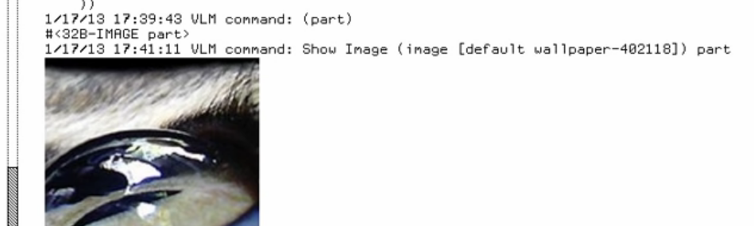

I was watching Kalman Reti demo an (emulated) LispM linked from a thread on the orange website about REPL-driven development. Aside from enjoying the printed-book typography of the user interface, I thought it might be worthwhile to jot down some notes about the interaction model.

The Documents as User Interfaces demo of Cedar Tioga on a SPARCStation is a related promising direction, one that’s viable today to some extent inside Emacs and web browsers: “Because buttons are represented just like other document properties, they can easily be generated by programs. For instance, we created a directory listing program to generate a button for each file listed. Clicking on such a button opens the named file.” (4'26")
I thought the concept of linking text in a typescript (“presentations of objects I’ve already printed on my typescript”) to live objects to make it “mouse sensitive” was interesting. What if your “typescript” consisted entirely of such “live objects”? Is that a viable mode of interaction?
That is, what if you could still print(foo) for whatever object
foo, but the result was not merely appending some dumb characters to
a buffer, but rather appending the object denoted by foo to the
layout of a scrollable document capable of interaction? foo could,
for example, be another such typescript, visually nested within the
larger one.
To some extent I think the Lisp object-graph model (used by, say,
Python) may not be ideally suited to this: if you print out, for
example, an integer, an interaction you might want to support is
change that integer. In the Lisp model the best you can do is to do
print an integer-cell object which supports interactions to change its
value; the problem with this is that if what you’re printing is, say,
the x field of some object, it’s unlikely you would have previously
thought ahead to mmake that field an integer-cell object.
Basically the problem is that in the Lisp memory model values like
integers are first-class, but storage locations such as integer slots
are not first-class. (Common Lisp patches over this to some extent
with the “generalized places” concept of setf, but you still have to
write (defun (setf foo) ... all the time.) See First class locations for more notes on this.
But in a situation like that, where you’re changing some value you maybe used later in a calculation or to display something, you’d maybe sort of like to redo those calculations or that display. So there’s a whole question of spreadsheet-like incremental recomputation involved. (A key point about Reti's demo is that at one point he modifies some image data, but because the pixels on the screen are cached copies of a previous version of the image, they don't update until he rebuilds the screen from scratch.)
The LispM sort of doesn’t exploit the full potential of a graphical terminal; in one of Reti’s examples, at 5'7", he clicks on the “Read Image File” command from the help and starts typing “linux”, and the resulting text is
1/17/13 17:34:16 VLM command: Read Image File (from file(s) [default WILSON:>reti>demo.lisp.newest]) linux
Which, with the advantage of 40 years of UI research, I strongly suspect would work better by putting the default filename into the place where you’re typing, rather than to the left of it. And I suspect it would be better to show all the arguments for a multi-argument command at once rather than one at a time.
(Incidentally, in this particular example, the similarity to Emacs is very strong; not only does Emacs prompt with the same style, but he’s also accessing a remote filesystem in the same way as ange-ftp and TRAMP.)
The LispM interaction model is somewhat modal; as Reti points out at 6'14", none of the previously-mouse-sensitive things are mouse-sensitive at the point that he's being prompted for an image to load, so it’s still essentially a command-line interface — it isn’t so much that the various bits of text in the typescript support separate interactions themselves as that they are (or are not) viable arguments for the single interaction going on at the moment. Some form of such modality is apparently unavoidable (consider xmag, xkill, “Inspect Element”, and screenshots) but it would be nice to keep it quasimodal rather than fully modal; with modern multitouch displays, this might be less challenging than previously.
A potentially interesting thing about building up a typescript as a layout of objects is that it could start very small on your display and grow as needed before starting to scroll.